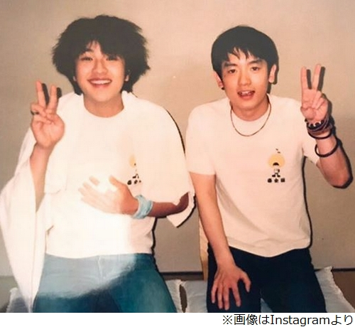
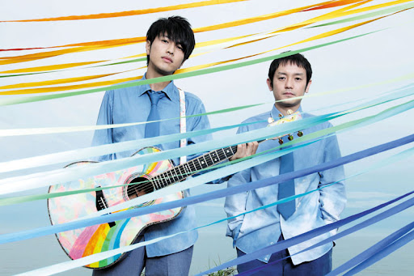

ゆずの軌跡
1996年
北川悠仁と岩沢厚治で「ゆず」を結成し、神奈川県横浜市中区伊勢佐木町の横浜松坂屋前で、路上ライブを開始。

1998年
冠ラジオ番組『ゆずのオールナイトニッポンR』放送を開始。6月にシングル「夏色」で人気が高まり、注目を集める。人気が高まったことにより、毎週日曜日に定期開催を行っていた路上ライブを、人が集まりすぎるなど安全上の理由から8月で終了になった。路上ライブ最終日は、台風直撃にもかかわらず、約7500人もの観客が集まった。

2000年代
初の東京ドームライブや紅白歌合戦初出演などの活躍に加え、「栄光の架橋」「虹」など、数々のヒット曲を発表。幅広い世代からの人気を集めた。

2010年代
たくさんのライブや紅白出場、レコード大賞に選出される。2017年にはオールタイム・ベストアルバム「YUZU 20th Anniversary ALL TIME BEST ALBUM ゆずイロハ 1997-2017」を販売し、活動20周年を記念したイベントなど、多くの関心が寄せられ、国民的アーティストの道を歩む。

現在まで
新型ウイルスの時期を乗り越え、国内外でのツアーや、時代に合わせた新たな音楽性に挑戦し続け、笑顔を届けている。